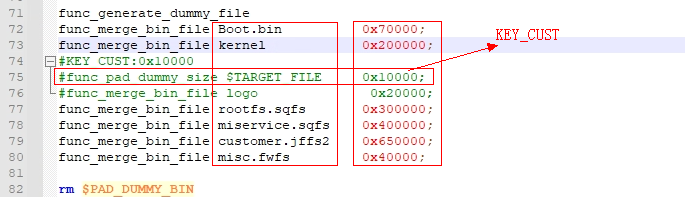
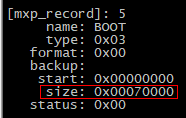
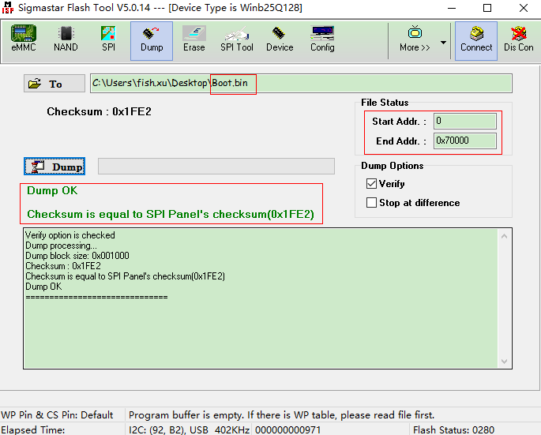

母片制作
1. SPINAND母片制作¶
1.1. 必备文件¶
-
可执行程序Sstarbin（sigmastar提供，Sstarbin也支持PNAND，这里只讲解SPINAND部分，方法大同小异）。
-
初始化文件
SPINAND.INI（文件名不固定，可以自行指定）。 -
第一个执行脚本（类似images的
auto_update.txt，假设取名为auto_update_spinand.txt）。 -
要生成bin文件的scripts以及镜像文件（这里以公版编译的整包images为例讲解，用户实际生产时可用自己的image文件替换）。
1.2. 配置文件¶
1.2.1. SPINAND.INI
[path] //设置image和script和生成bin输出的路径 root_directory=./ image_directory=images/ //设置image的位置，记得别漏掉\号 script_file=auto_update_spinand.txt //第一个执行的scripts文件 outpath=./ [nand] //设置nand的类型，和id nandtype=SPINAND //如果是pnand，则为PNAND，大小写都可以 #nandtype=PNAND nandid=0x98-0xF1-0x80-0x15-0xF2 //要生成的image跑的板子上的flash的id号 //nandid=0xC2-0x12 [env] //设置环境变量的类型和变量分区的名字，以便生成bin文件时能够保存环境变量 env_type=NANDRAW //目前都是直接存在nandflash中，所以都设置为NANDRAW env_part=ENV //环境变量分区的名字，要与mtdparts中的环境变量分区名字一致 #env_volume=MPOOL #env_offset=0 [cis] //设置nni文件和pni文件，主要是为了tool跑起来时load对应文件初始化flash变量的参数 ecctype=10 //使用默认值就好 nni=SPINANDINFO.nni //spinand使用.nni文件 #nni=PNANDINFO.sni //pnand使用.sni文件 pni=PARTINFO.pni //分区文件 #ppm=PAIRPAGEMAP_v2.ppm //暂时没有用到 [fcie] //此处主要用于设置pnand计算ecc的类型，spinand用不到，目前基本都用fcie5 type=fcie5 [boot] #boottype=BFN #miu=bfn_miu.bin [rawdata] #type=nand
1.2.2. auto_update_spinand.txt
-
创建分区（必须要先创建分区，这是跟
auto_update.txt的唯一区别）dynpart nand0:768k@1280k(IPL0),384k(IPL_CUST0),384k(IPL_CUST1),384k(UBOOT0),384k(UBOOT1),256k(ENV),0x500000(KERNEL),0x500000(RECOVERY),0x600000(rootfs),-(ubi0)
注意：分区大小以及分区名要跟images里面的保持一致。
-
指向升级要加载的全部脚本的文件
estar images/auto_update.txt
auto_update.txt会去load一系列的es脚本。注意：删掉
images/scripts/[[set_partition.es的setenv mtdparts *，否则会跟前面的创建分区重复。
1.3. 生成烧录程序¶
1.3.1. 生成nand.bin
在编译服务器执行./Sstarbin -n SPINAND.INI，生成一个nand.bin，以及两个烧录器分区配置文件leap.def/snchk.def。nand.bin就是烧录程序；不同烧录器配置文件不一样，我们只能生成两种常用烧录器配置文件，用户可以根据自己烧录器协议修改配置文件。
1.3.2. 检验方法
母片nand.bin文件生成后，需要验证生成的母片和我们的分区文件能否对应。
-
用ultraEdit文本编辑器打开nand.bin文件和images里面的分区文件(uboot_s.bin/ipl_s.bin等)，在nand.bin对应的地址处和单个分区文件进行比较。
-
工具在写ubi分区时，是以ubi格式写入的，用上述方式检验方式行不通。ENV分区类似，所以ubi分区和ENV分区无法用上述方法检验。
1.4. FAQ¶
1.4.1. 注意事项
-
如果生成的是pnand bin，是包括oob区的；spinand的bin文件是不包括oob区的，spinand的oob区是spinand自己生成的，所以烧录的时候记得根据flash类型（pnand or spinand），打开或是关闭oob选项。
-
目前文件的加载只支持tftp指令，所以如果脚本是通过其它指令加载脚本需要修改成tftp加载（比如sd卡fatload）。
1.4.2. 问题排查
-
如果执行生成bin时报错，先检查是否所执行的命令不支持，比如sd的升级脚本需要改为tftp的脚本形式。
-
是否执行了一些save命令，重新保存了分区信息，导致分区信息与在auto_update_spinand.txt中指定的分区不一致。
-
如果烧录到板子后无法运行，首先根据分区信息，检查生成的bin文件对应偏移地址处的文件信息是否正确，比如IPL的分区偏移为0x140000，则检查生成的bin文件地址0x140000位置处的文件内容是否为IPL文件的内容。
-
检查烧录器烧录时oob区是否disable。
-
dynpart的各分区名和大小是否和image一致。
-
用flash tool工具分别dump出板子上flash开始处、IPL分区偏移处、IPL_CUST分区偏移处、UBOOT分区偏移处、kernel分区偏移处的部分文件对比是否与烧录的bin文件一致。
2. SPINOR母片制作方法¶
nand flash需要处理坏块，且数据格式有要求，所以需要用工具。但是nor flash只需将所有分区按照实际分区大小拼接即可。
因目前ISP_TOOL不支持SPI NOR 32M的flash寻址（目前最大支持16M寻址），所以使用SPI TOOL去dump母片的方式有限制，这里推荐使用脚本的方式制作。
env数据是需要uboot运行之后才写到对应分区的，所以env分区部分还是需要依赖ISP TOOL去dump，建议直接dump整个boot分区。
具体分区大小可以在板子上进入uboot，输入mxp t.list或者从nor.squashfs.partition.config分区文件查看。
2.1. 必备文件¶
-
拼接image的脚本
make_bin.sh（sigmastar提供，文件名可更改）。 -
boot分区数据
Boot.bin（文件名可更改，但要和make_bin.sh里面保持一致）。 -
需要烧写的整包image（这里以公版编译出来的images为例）。
2.2. 配置文件¶
2.2.1. make_bin.sh
-
指定文件名
ORIGIN_FILE=$IMAGE_DIR/Boot.bin //这个文件名字就是boot分区数据名 TARGET_FILE=$IMAGE_DIR/SpiFlash.bin //这个是最终制作生成的母片烧录bin，这里的文件大小跟 实际的flash大小一致
-
指定分区文件名和大小
自行按照分区顺序，使用
func_merge_bin_file函数将对应的分区的bin跟文件size 填写好，如下图（按照实际的分区顺序跟分区size填好即可）。
注意这里，如果使用zk_gui的加密lib，默认会有一个KEY_CUST分区，该分区也需要追加空数据，这里将注释掉的打开即可（目前size是0x10000）。
2.2.2. Boot.bin
-
将编译出来的image烧写到板子上。
-
停串口，断开串口工具，打开flash tool并连接上。
-
根据boot分区的大小（boot分区包含IPL.bin/IPL_CUST.bin/MXP_SF.bin/u-boot.xz.img.bin，外加env的4K分区）dump下boot分区的数据。


2.3. 生成烧录程序¶
-
将Boot.bin和make_bin.sh放到images目录下，然后在编译服务器执行脚本make_bin.sh即可生成烧录程序SpiFlash.bin。
-
确定没有错误log，且SpiFlash.bin的文件大小刚好等于flash size，可以通过flash tool将SpiFlash.bin整个烧录到板子上，看是否能正常启动。
-
如果有问题，可以用UltraEdit打开SpiFlash.bin，在对应的分区地址处和分区文件进行比对，看打包是否正常。
3. eMMC母片制作方法¶
3.1. 必备文件¶
-
合并镜像工具emmcnize（linux端工具，sigmastar提供）。
-
UDA分区配置文件part.ini（文件名可更改）。
-
mkenvimage工具（boot编译完后tools目录下获取）。
-
整包image（这里以公版编译出的images为例）。
3.2. 配置文件¶
3.2.1. env.bin
-
将emmc分区切至boot0分区（或boot1），然后将
BOOT_PART.bin文件烧入到0地址处。 -
在板子uboot下通过printenv命令打印出环境变量保存到一个txt文件，假如命名为
env.txt。内容参考如下：
#env.txt baudrate=115200 bootargs=console=ttyS0,115200 root=/dev/mmcblk0p2 rootwait rootfstype=ext4 rw init=/linuxrc LX_MEM=0x3ffe0000 mma_heap=mma_heap_name0,miu=0,sz=0x9E9C000 cma=2M bootcmd=emmc read.p 0x21000000 kernela 0xA00000;bootm 0x21000000; bootdelay=0 ethact=sstar_emac ethaddr=00:30:1b:ba:02:db fileaddr=23b2ef00 filesize=101 stderr=serial stdin=serial stdout=serial
-
通过mkenvimage工具生成环境变量镜像env.bin，mkenvimage使用参数如下：
请指定environment partition的大小。
mkenvimage [-h] [-r] [-b] [-p <byte>] -s <environment partition size> -o <output> <input file>
这个工具需要一个 key=value 的输入文件（与
printenvshow 相同）并生成相应的可flash的environment image。输入文件的格式:
key1=value1
key2=value2
...
空行被跳过，带有# 的第一行为注释（也被跳过）。
-r : the environment has multiple copies in flash
-b : the target is big endian (default is little endian)
-p < byte > : fill the image with < byte > bytes instead of 0xff bytes
-V : print version information and exit
如果输入文件为“-”，则从标准输入读取数据。
使用命令参考如下：
./mkenvimage -s 0x1000 -o env.bin env.txt
3.2.2. part.ini
-
参考格式如下：
image=XX，定义分区镜像名，必须与已有镜像名相同。
vol_id=X，定义分区id，目前用于标识而已。
vol_size=XX，定义分区大小（Bytes单位），必须不小于对应镜像大小。
vol_name=XX，定义分区名，uboot下通过emmc part看到的分区名。
[XXX-volume] section是真正的用户分区，它们的image、vol_size、vol_name都可以根据实际分区情况进行更改。vol_id从1开始编号，最大支持64个分区。
-
根据公版images填入内容如下
[env] image=env.bin vol_id=0 vol_size=0x15000 vol_name="" [kernela-volume] image=kernel vol_id=1 vol_size=0xA00000 vol_name=kernela [rootfsa-volume] image=rootfs.ext4 vol_id=2 vol_size=0x1400000 vol_name=rootfsa [usera-volume] image=miservice.ext4 vol_id=3 vol_size=0x1400000 vol_name=usera [data-volume] image=customer.ext4 vol_id=4 vol_size=0x3C00000 vol_name=data
3.3. 生成烧录程序¶
-
build server下执行命令，生成最终烧录程序image.bin
./emmcnize part.ini image.bin
-
若配置文件指定了某个文件，但是没有放入指定镜像文件，那么会提示空文件，不影响完整镜像的生成，但是生成的镜像不会包含需要部分镜像可能导致无法启动。
-
将emmc分区切至UDA分区，然后将image.bin烧入到板子0地址处即可验证。